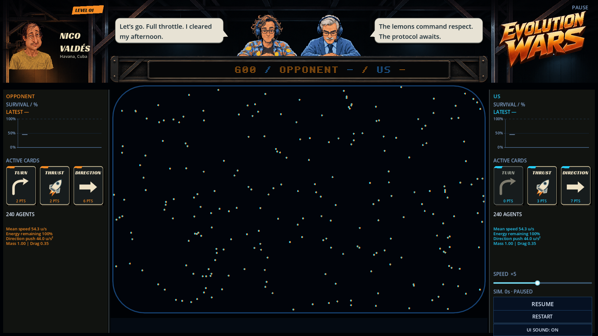
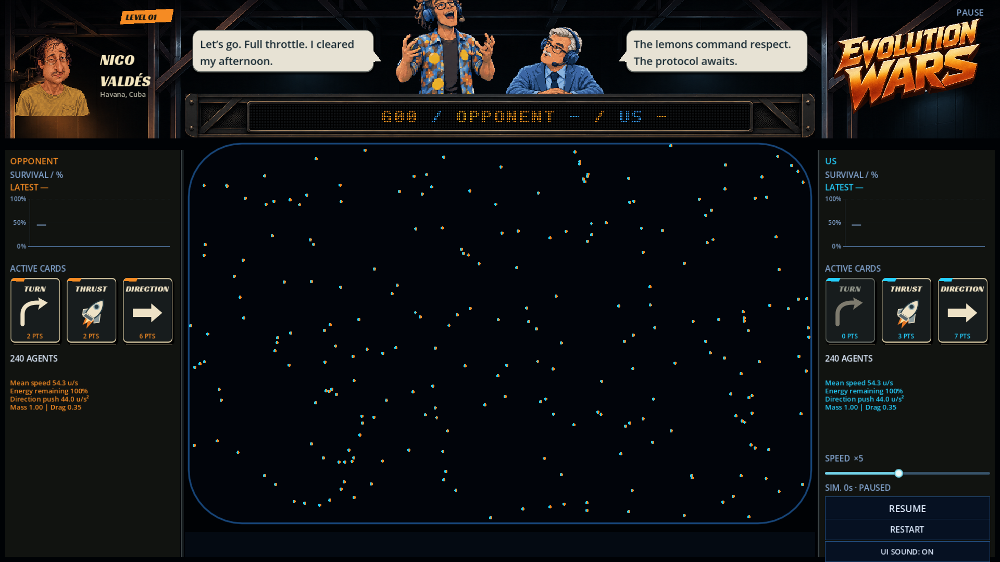
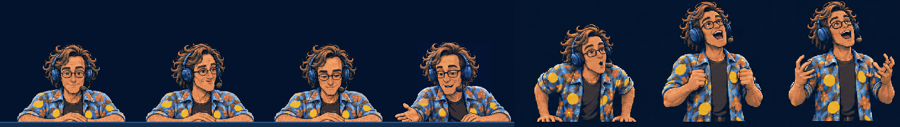
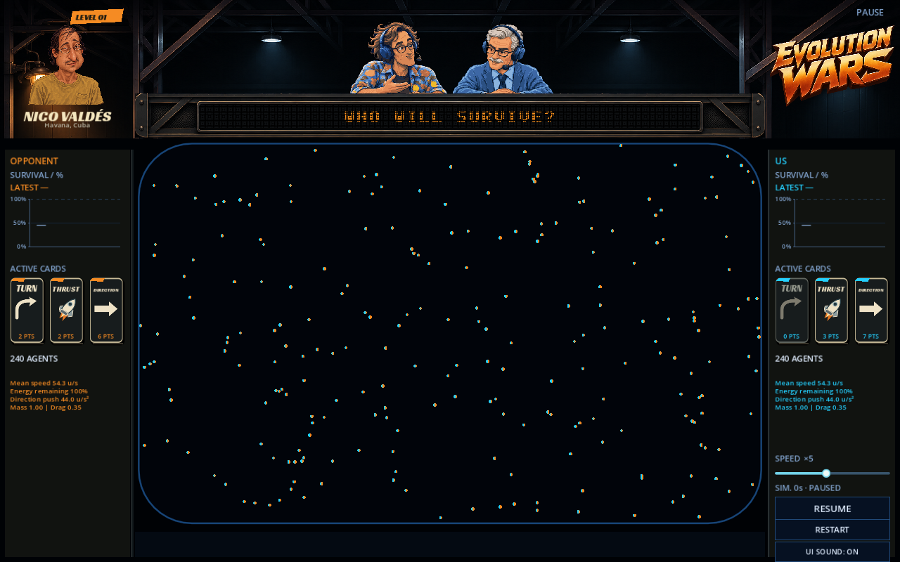

Décor recadré sans étirement. Une façade verticale masque le bas des mains ; l’aréna remonte de 20 unités. Le logo reste inchangé.


Repos · regard vers René · patinoire · enthousiasme assis · montée · debout · geste debout. Aucune vignette n’est agrandie pour remplir son cadre.

